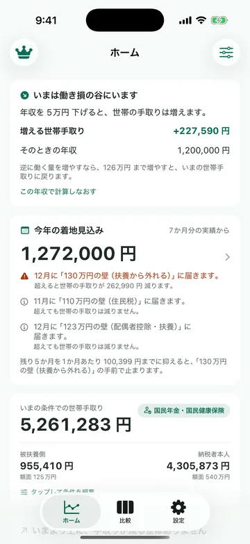
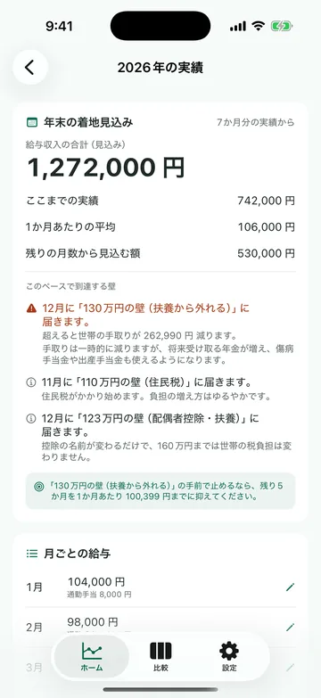
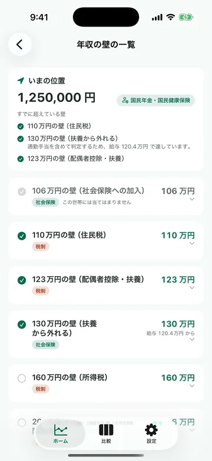

「あと10万円働くと、
世帯の手取りはどう変わる？」
配偶者控除・社会保険・住民税の「壁」を、
世帯ベースで一画面に可視化。
手取りが最大になる働き方を、即提案します。
iOS 16以降対応 · 端末内処理（サーバー送信なし）· 無料で始められます
「年収の壁」と賢く付き合う、
4 つの中核機能
手取りカーブの可視化
あなたと配偶者の年収帯ごとの世帯手取りを Swift Charts で描画。壁の位置と「ヘコみ」が一目でわかります。
2026年制度に正確対応
国税庁・年金機構の最新制度に基づき所得税・住民税・社会保険を世帯ベースで計算。配偶者控除・特別控除も網羅。
シナリオ比較
「夫 500万・妻 100万」vs「夫 500万・妻 130万」など、複数の働き方を並べて手取り差分と税負担を比較。
壁接近アラート
給与から「あと◯万円で壁を超える」を判定し通知。年末調整前の働き方調整に役立ちます。
主婦・主夫の働き方判断を、
制度の正確さで支援
配偶者の年収を 0〜250万円までスライドさせると、世帯全体の手取りがリアルタイムで動きます。 106・110・123・130・160・201.6万の各壁を色付きで明示。「実は壁を超えた方が得」のラインも一目でわかります。
現在の働き方と、もし配偶者がパート時間を増やしたら／フルタイムに切り替えたら、を保存して比較。 所得税・住民税・社保それぞれの内訳と、世帯総手取りの差を金額で提示します。
アプリ内の各「壁」の詳細から、国税庁・年金機構の根拠ページへワンタップで遷移。 制度の正確性を担保し、ご自身でも一次情報を確認できます。
まずは無料で試せます
基本機能は無料、高度なシナリオ比較・通知はプレミアムで開放されます。
- シナリオ無制限保存・比較
- 精密入力（社保区分・各種控除）
- 壁接近通知アラート
- 住民税の自治体差分対応
- 1ヶ月無料トライアル付き
購入はApp Storeを通じて行われ、Appleの利用規約が適用されます。
自動更新サブスクリプションはいつでもキャンセルできます（iPhone「設定」→「Apple ID」→「サブスクリプション」）。
アプリの画面



世帯手取ナビ（HomeNet Navi）
App Store から入手できます。iPhone / iPad でそのまま使えます。
App Store で見る無料（アプリ内課金あり）